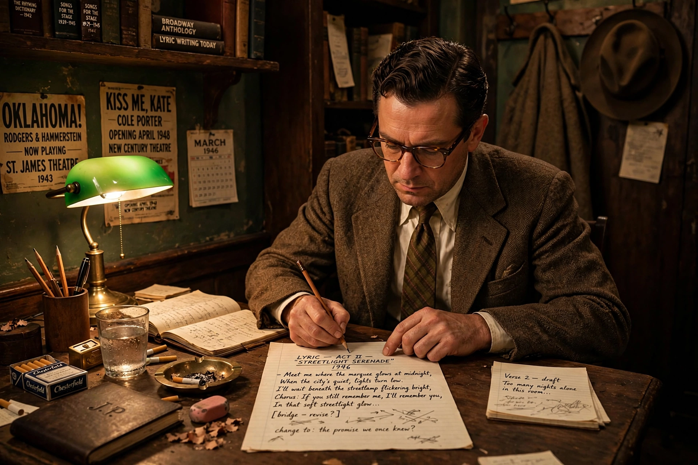

Oscar Hammerstein II
From Wikipedia, the free encyclopedia
| Oscar Hammerstein II | |
| Born | Oscar Greeley Clendenning Hammerstein II 12 July 1895 New York City, U.S. |
|---|---|
| Died | 23 August 1960 (aged 65) Doylestown, Pennsylvania, U.S. |
| Occupation | Librettist, lyricist, theatrical producer |
| Years active | 1919–1960 |
| Known for | Partnership with Richard Rodgers; Show Boat with Jerome Kern |

Oscar Hammerstein II (1895–1960)
Oscar Greeley Clendenning Hammerstein II (12 July 1895 – 23 August 1960) was an American librettist, theatrical producer, and director in musical theatre for almost 40 years. He won eight Tony Awards and two Academy Awards for Best Original Song. Many of his songs are now standards of the musical theatre repertoire.
Hammerstein is best known for his celebrated collaborations with composer Richard Rodgers — the duo known as Rodgers and Hammerstein — which produced Oklahoma!, Carousel, South Pacific, The King and I, and The Sound of Music. Before that partnership, his work with Jerome Kern on Show Boat (1927) helped transform the American musical by integrating song, character, and story.
Early life
Hammerstein was born in New York City into a theatrical family. His grandfather, Oscar Hammerstein I, was a famous opera impresario who built several theatres in New York; his father, William Hammerstein, managed vaudeville theatres, and his uncle Arthur was a Broadway producer. He studied at Columbia University and Columbia Law School but abandoned law for the theatre, writing his first musical, Always You (1920), with Herbert Stothart.
Work with Kern and others
During the 1920s Hammerstein worked with composers including Rudolf Friml, Sigmund Romberg, Vincent Youmans, and above all Jerome Kern. Their operetta collaborations included Sunny (1925), and in 1927 Show Boat, adapted from Edna Ferber's novel, opened to landmark success. Its songs — "Ol' Man River", "Make Believe", and "Can't Help Lovin' Dat Man" — and its serious treatment of race and miscegenation marked a turning point in musical theatre. In Hollywood he won Academy Awards for "The Last Time I Saw Paris" (1941) with Kern.
Rodgers and Hammerstein
When Rodgers's partner Lorenz Hart became unreliable through alcoholism, Rodgers turned to Hammerstein. Their first show, Oklahoma! (1943), ran for 2,212 performances, won a special Pulitzer Prize, and revolutionised the book musical. Carousel (1945) followed; South Pacific (1949) won the Pulitzer Prize for Drama and included the anti-prejudice song "You've Got to Be Carefully Taught". The King and I (1951) and The Sound of Music (1959) completed a run of successes that dominated Broadway and, through film adaptations, reached a worldwide audience. Together their shows accumulated 34 Tony Awards, 15 Academy Awards, two Pulitzer Prizes, and two Grammy Awards.
Style and influence
Hammerstein's lyrics are characterised by warmth, sincerity, and careful integration with plot and character; he mentored the young Stephen Sondheim, who regarded him as a surrogate father. Hammerstein died of stomach cancer at his home, Highland Farm in Doylestown, Pennsylvania, on 23 August 1960, shortly after The Sound of Music opened.